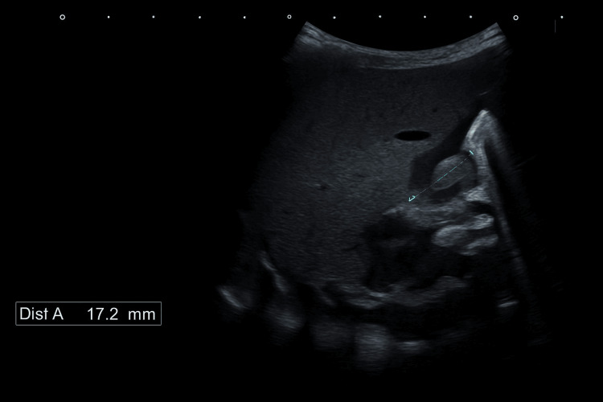
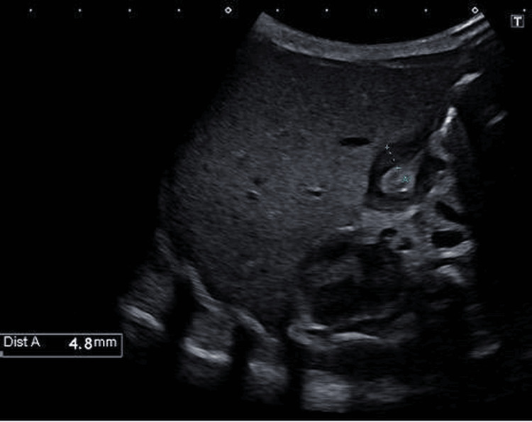

620 — Cấp cứu tiêu hóa nhi: HPS, xoắn, lồng & NEC / Peds GI emergency
Tags: pattern:non-nhu-nhi pattern:tac-ruot-nhi vung:bung-nhi protocol:sieu-am-bung-nhi
Mức chắc chắn (certainty): tổng hợp y văn (literature synthesis) — nhóm tự biên từ y văn mở, chưa gắn ca nguyên văn đơn lẻ.
1. Tổng quan — mật hay không mật là ranh giới sống còn
- Nôn KHÔNG mật (HPS 3–8 tuần): tắc trước bóng Vater — TẠI SAO cơ môn vị dày ≥ 3 mm + dài ≥ 15 mm + không dịch qua (cervix/antral nipple): cơ phì đại bít kênh.
- Nôn MẬT XANH (xoắn trung tràng): tắc sau bóng Vater — TẠI SAO SMV đảo trái SMA + whirlpool: ruột quay dở, mạc treo hẹp như cuống, xoắn theo chiều kim đồng hồ cắt máu toàn ruột giữa.
- Lồng hồi-manh tràng (6 tháng–3 tuổi): nhu động kéo đoạn gần vào đoạn xa — bia bắn ≥ 2,5 cm (lồng non thoáng qua < 2 cm tự tháo!).
- NEC (non tháng): vi khuẩn + sữa + thiếu máu ruột — pneumatosis + khí TM cửa.
2. Gamut nôn/đau bụng nhi (Gamut)
- Nôn vọt không mật + 3–8 tuần + cơ ≥ 3 mm: HPS — bù kiềm + cắt cơ môn vị.
- Nôn mật xanh + SMV trái SMA + whirlpool: xoắn — mổ Ladd tối khẩn (từng phút!).
- Đau cơn + phân máu + bia ≥ 2,5 cm: lồng — tháo hơi/thủy (cấm khi thủng/viêm phúc mạc!).
- Non tháng + bụng chướng + pneumatosis: NEC — nhịn ăn + kháng sinh + mổ khi thủng.
3. Bảng so sánh phân biệt (ma trận đối chiếu)
| Thực thể (entity) | Hình ảnh điển hình | Chốt vào (rule-in) | Chốt loại (rule-out) | Gợi ý xác nhận |
|---|---|---|---|---|
| HPS | Cơ ≥ 3 mm + dài ≥ 15 mm + không dịch qua | 3–15–15 + nôn không mật | Nôn mật → xoắn | Bù kiềm + Ramstedt |
| Xoắn trung tràng | SMV trái SMA + whirlpool + Treitz thấp | Mật xanh + whirlpool = mổ ngay | Không mật → HPS | Ladd tối khẩn |
| Lồng ruột | Bia ≥ 2,5 cm + giả thận + hạch nhân | Cơn + máu + ≥ 2,5 cm | < 2 cm thoáng qua → theo dõi | Tháo hơi (cấm khi thủng!) |
| NEC | Pneumatosis + khí TM cửa + non tháng | Non + chướng + khí thành | Khí tự do → thủng | Nhịn ăn + KS + mổ khi thủng |

Kênh môn vị dài + cơ dày, không dịch qua — vượt ngưỡng 3–15. Nguồn: Ismail et al., Cureus 2025 Fig. 3, CC BY 4.0.
Đo cơ đơn thành 4,8 mm (≥ 3 mm). Nguồn: Ismail et al., Fig. 4, CC BY 4.0.4. Protocol siêu âm bụng nhi
- Siêu âm đầu tay (môn vị + SMV/SMA + bia + thành ruột); upper GI khi nghi xoắn; XR khi NEC (pneumatosis/khí tự do).
flowchart TD
A[Nôn/đau bụng nhi] --> B{Có mật xanh?}
B -->|Không + 3-8 tuần| C[HPS: cơ≥3mm]
B -->|Có| D[SMV/SMA + whirlpool?]
D -->|Đảo + xoáy| E[Xoắn: Ladd tối khẩn]
D -->|Bia≥2.5cm| F[Lồng: tháo hơi]
5. Cạm bẫy
- HPS sớm ngày 3 (ca trên!) tưởng trào ngược — nôn dai + cơ dày là mổ dù chưa đủ 3 tuần.
- Doppler xoắn bình thường giả — mật xanh + lâm sàng là mổ, đừng chờ Doppler.
- Tháo lồng khi đã thủng = tử vong — khí tự do/viêm phúc mạc là chống chỉ định tuyệt đối.
6. Tự lượng giá — Blind Quiz
Ca 1 — Sơ sinh 3 ngày nôn dai không mật. Đọc 2 ảnh siêu âm.
- Hỏi: số đo bao nhiêu? Đủ ngưỡng 3–15 không? Mổ gì?
Bấm để hiện đáp án
- Dấu hiệu (findings): kênh dài 17,2 mm (≥ 15) + cơ dày 4,8 mm (≥ 3) + không dịch qua.
- Chẩn đoán (diagnosis): hẹp phì đại môn vị sơ sinh sớm — bù kiềm + cắt cơ môn vị Ramstedt (dù mới ngày 3!).
- Nguồn: Ismail et al., Fig. 3–4, CC BY 4.0.
Ca 2 — Nôn mật xanh + SMV trái SMA + whirlpool: HPS hay xoắn? Giờ mổ? (Bảng mục 3.)
Bấm để hiện đáp án
- Xoắn trung tràng: mổ Ladd tối khẩn từng phút (ruột hoại tử toàn bộ!).
Bài liên quan chéo
- 600 – Tổng quan Nhi
- 162 – Tắc ruột (người lớn)
- 160 – Bụng cấp GI (ruột thừa)
Không dùng để chẩn đoán độc lập khi chưa có người hướng dẫn.